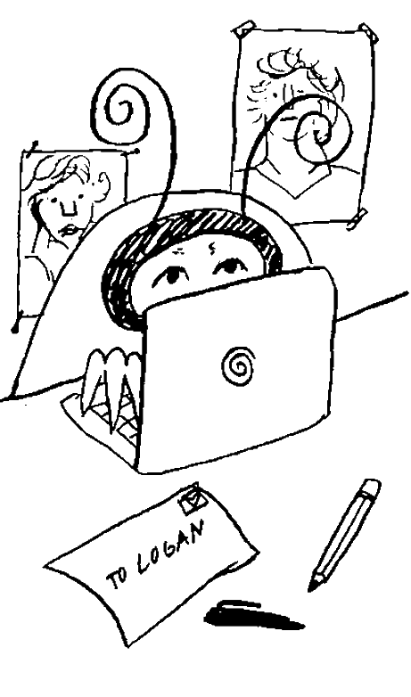

Clear Communication
How to Contact Logan Paul
He has many different forms of social media—such as Twitter, Instagram, and Snapchat accounts—that make it easy to send him messages. You can also send him an email through his professional website, or write him a letter to send to his fan mail address.
Under the “About” tab, there’s a message icon where you can send him a message. If you’d rather post a comment on one of his videos, you can do this as well. You’ll need a YouTube account to send messages or post comments. To leave comments on a YouTube video, scroll down to the comments section and type your comment into the comment bar before posting.
If you have a Twitter account, send Logan Paul a tweet to start talking to him. His Twitter handle is @LoganPaul, or you can find his Twitter profile at
https://twitter.com/loganpaul.
If you don’t already have a Twitter account, you can create one.
Twitter has a 280 character limit, so you’ll need to make your message short and to the point.
Visit Logan Paul’s Facebook page to send him a message. Type “Logan Paul” into the Facebook search box, or visit
https://www.facebook.com/LoganPaul/. Click on the “Send Message” tab to bring up a chat box for Logan Paul’s page. Type your message to Logan, making sure it’s not too lengthy, before sending it. Read the comment thread on Logan Paul’s Facebook page to see if anyone has posted other ways to reach him.
Connect with Logan Paul on Instagram.
Log in to your Instagram account, or create one,
if necessary.
Follow his account @loganpaul, and then send him a message by clicking on the “Message” tab right next to his picture. To be taken directly to his Instagram account, visit
https://www.instagram.com/loganpaul/. You can also comment on his posts to reach out to him.
Add him on Snapchat to use the app’s chat service. Open up Snapchat on your phone and add the username “LoganPaul.” You’ll be able to see any Snap stories that Logan Paul uploads, and you can take advantage of the chat option by clicking on his name. You can also respond directly to one of his Snap stories by swiping up while the story is playing.
Keep your social media messages concise and friendly. While social media isn't as formal as writing a letter or an email, you should still be respectful and get your message across in a nice way. Some social media platforms will have limits as to how much you can type, so try to keep your message short and sweet.
Be aware that you might not always get a response. Try to choose 1 or 2 methods of communicating with him over social media, and avoid bombarding him with lots of messages.
Email Logan Paul through his website for a more professional inquiry.
Visit his website.
When you scroll all the way to the bottom, you’ll see a “Get in Touch” section. Here, you can type in your name, email address, and the message you’d like to send to Logan before pressing “Send Message.” While Logan Paul’s social media accounts can be used to contact him about personal matters, his website is more for business inquiries.
For example, if you’re interested in finding out how to get Logan Paul to come to an event, you could use this form of communication.
This is the only email address that's associated with Logan Paul.
Send a letter to Logan Paul’s fan mail address.
Address the letter to 8383 Wilshire Blvd, Suite 1050, Beverly Hills, CA 90211 USA—this is where his fan mail is sent.
Once you’re finished writing the letter, seal it up in an envelope with proper postage and send it off to the post office. Make sure you put your return address on the envelope, or include a method of contacting you in the letter,
just in case he responds.
Make the letter as personalized as possible. Writing the letter by hand is a great way to personalize the letter, but you can also type it up and sign your name to it.
The advantage to sending a letter in the mail (or even by sending an email) is that you don’t have any sort of character limit.
Start your letter with,
“Dear Logan Paul,”
and end it with a friendly closing such as
“Sincerely,”
and then your name.
While your letter doesn’t have to be super concise, try to limit it to a page.